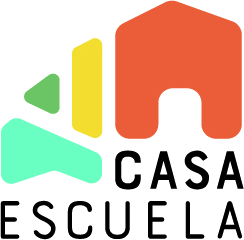

Casa Escuela
Una educación media para los jóvenes de la cuenca del lago.


Casa Escuela nace para que los jóvenes de Puerto Guadal y las localidades de la cuenca del lago puedan acceder a una educación media de calidad, sin tener que alejarse de su comunidad y de su entorno.
Una propuesta educativa contextualizada e integral
Una educación integral: tres dimensiones que se encuentran en una misma experiencia.
Académico
Formación basada en el currículum nacional, con acompañamiento personalizado y tecnología al servicio del aprendizaje.
Técnico-práctico
Aprender haciendo, a través de proyectos, oficios, experiencias y actividades que permiten explorar intereses y desarrollar habilidades prácticas.
Personal y valórico
Desarrollarse como personas, aprendiendo a conocerse, relacionarse con los demás y comprometerse activamente con el mundo que los rodea.
Tecnología al servicio del aprendizaje
Una herramienta para hacer posible una educación de calidad en localidades rurales.
La tecnología permite acceder a contenidos y recursos educativos de calidad, personalizar los ritmos de aprendizaje y hacer seguimiento del progreso de cada estudiante.
Aprender en el territorio, crecer hacia el mundo
Vemos el territorio como una oportunidad de aprendizaje, no como una limitación. Su naturaleza, sus espacios, sus comunidades y los saberes de quienes lo habitan son una fuente de experiencias y conocimientos que enriquecen la educación.
Proyectos, actividades prácticas, salidas y experiencias permiten que los estudiantes aprendan desde su realidad y en diálogo con el mundo que los rodea.
Abrir caminos para el futuro
Casa Escuela busca que los jóvenes puedan ampliar sus horizontes, descubrir sus intereses y construir su propio camino, sin perder de vista su punto de partida.
Queremos entregarles herramientas y capacidades para continuar estudios superiores o desarrollar una trayectoria técnico-práctica vinculada a las oportunidades de nuestro territorio, con foco en turismo y conservación y sus posibilidades de desarrollo laboral.
Porque quedarse también puede ser una forma de crecer.
Conversemos
Escríbenos si quieres ayudar, sumarte como aliado o conocer más de nuestro trabajo.